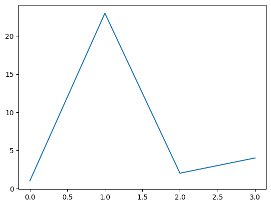
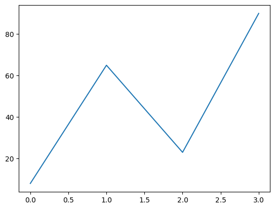

import matplotlib.pyplot as pltplt.plot([1, 23, 2, 4])plt.show()plt.plot([8, 65, 23, 90])plt.show()

(a) First

(b) Second
Figure 1: Charts
But also dynamic graphs:
import altair as altimport pandas as pdimport numpy as npnp.random.seed(42)source = pd.DataFrame( np.cumsum(np.random.randn(100, 3), 0).round(2), columns=["A", "B", "C"], index=pd.RangeIndex(100, name="x"),)source = source.reset_index().melt("x", var_name="category", value_name="y")# Create a selection that chooses the nearest point & selects based on x-valuenearest = alt.selection_point(nearest=True, on="mouseover", fields=["x"], empty=False)# The basic lineline = ( alt.Chart(source) .mark_line(interpolate="basis") .encode(x="x:Q", y="y:Q", color="category:N"))# Transparent selectors across the chart. This is what tells us# the x-value of the cursorselectors = ( alt.Chart(source) .mark_point() .encode( x="x:Q", opacity=alt.value(0), ) .add_params(nearest))# Draw points on the line, and highlight based on selectionpoints = line.mark_point().encode( opacity=alt.condition(nearest, alt.value(1), alt.value(0)))# Draw text labels near the points, and highlight based on selectiontext = line.mark_text(align="left", dx=5, dy=-5).encode( text=alt.condition(nearest, "y:Q", alt.value(" ")))# Draw a rule at the location of the selectionrules = ( alt.Chart(source) .mark_rule(color="gray") .encode( x="x:Q", ) .transform_filter(nearest))# Put the five layers into a chart and bind the dataalt.layer(line, selectors, points, rules, text).properties( width="container", height=300)
We can even embed a whole dataset and interact with it Tabelau style.
import pygwalker as pyg_ = pyg.walk(source)
If you are using pygwalker on Jupyter Notebook(version<7) and it can't display properly, please execute code to fix it: `pip install "pygwalker[notebook]" --pre`.(close after 15 seconds)
Notice you can drag and drop columns to change the graph to your heart’s content. A·we·some!